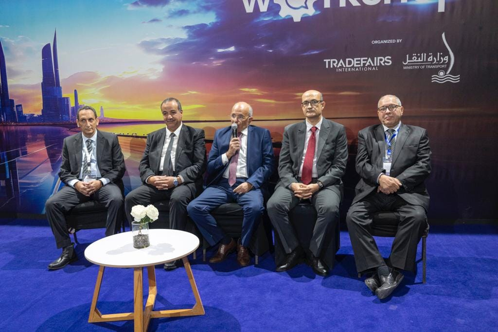
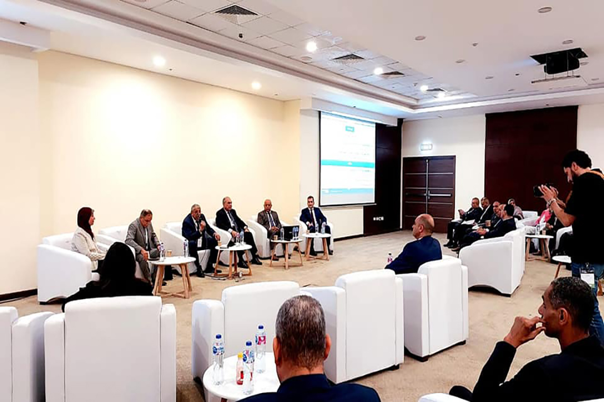
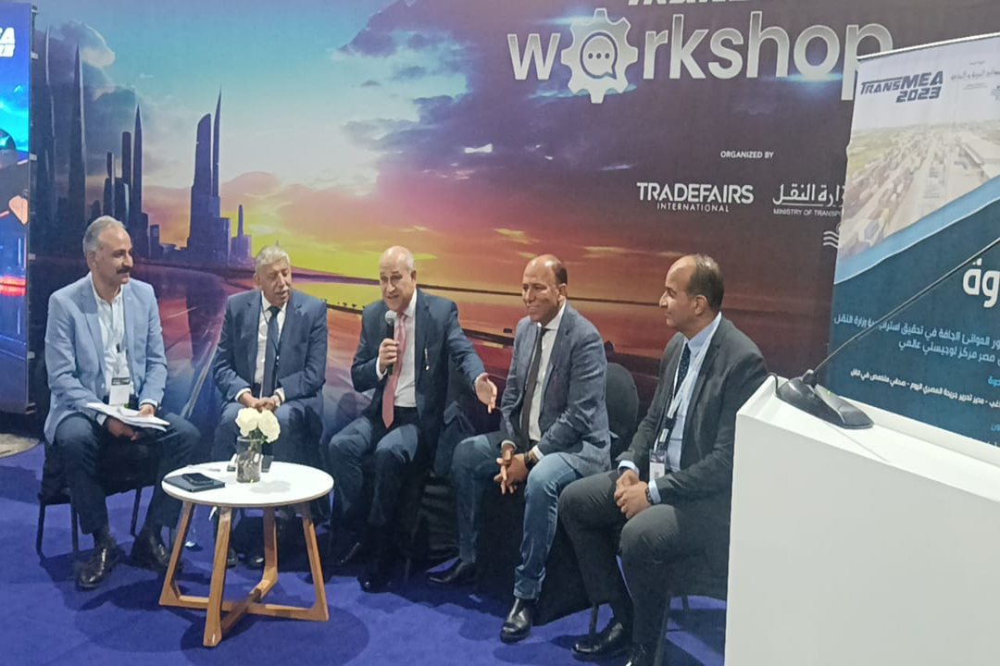
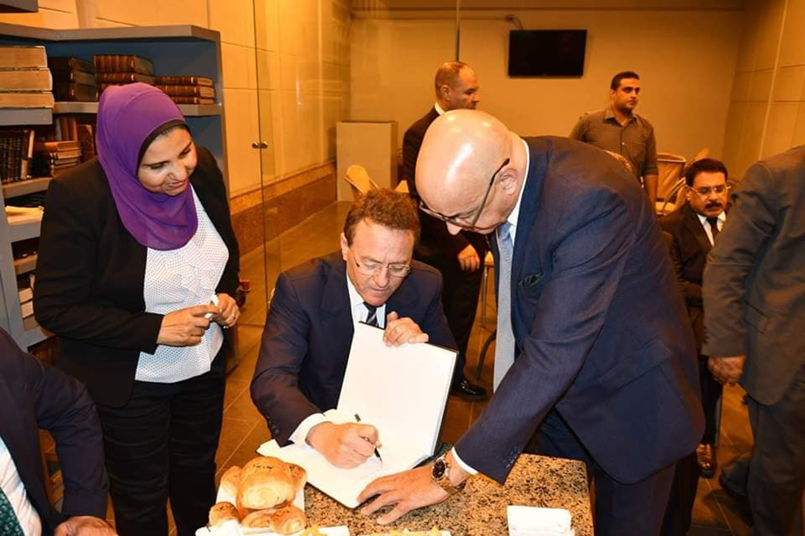
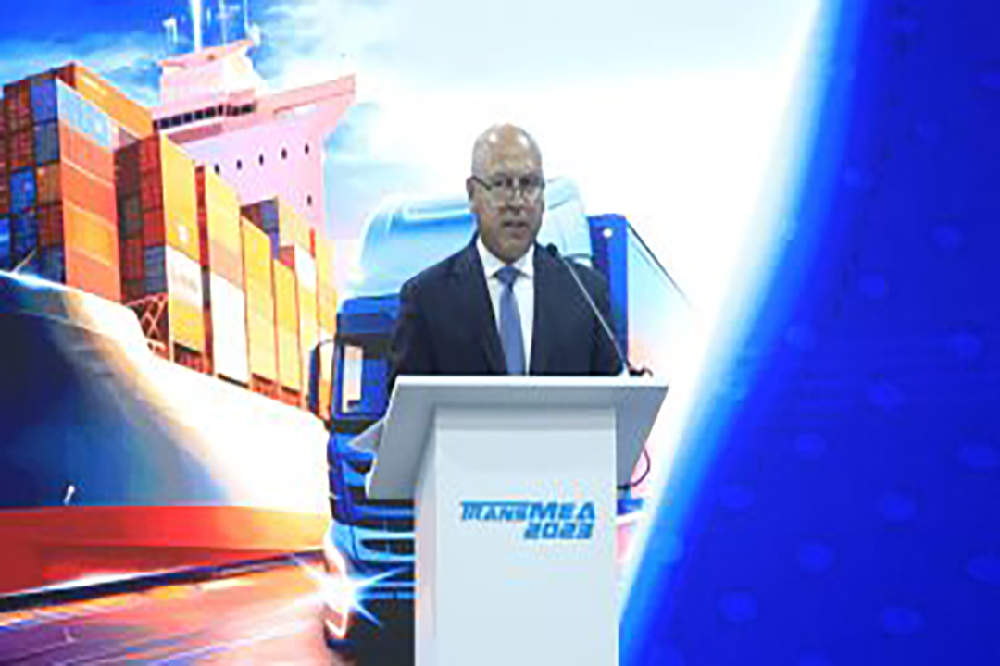

-
 During the Activities of the Third Day Events of the International Exhibition and Conference of Smart Transport, Infrastructure and Logistics for the Middle East and Africa Trans MEA 2023
During the activities of the third day of the International Exhibition and Conference of Smart Transport, Infrastructure and Logistics for the Middle East and Africa Trans MEA 2023, which is held under the patronage of His Excellency President Abdel Fattah El-Sisi, President of the Republic, under the slogan "Localization of the transport industry in Egypt", a workshop entitled ((The use of asphalt emulsions to achieve sustainability in the maintenance of roads and airports))
-
 The Maritime Transport Sector Holds a Workshop Entitled "Sustainable Green Maritime Transport Work"
On the sidelines of the third day events of the International Exhibition and Conference of Smart Transport, Infrastructure and Logistics for the Middle East and Africa Trans MEA 2023, the Maritime Transport Sector holds a workshop entitled "Sustainable Green Maritime Transport Work"
-
 The General Authority for Land and Dry Ports Holds a Workshop Entitled "The Nature of the Work of Dry Ports and Logistics Areas and the Purpose of their Establishment"
On the sidelines of the third day events of the International Exhibition and Conference on Smart Transport, Infrastructure and Logistics for the Middle East and Africa Trans MEA 2023, the General Authority for Land and Dry Ports holds a workshop entitled "The nature of the work of dry ports and logistics areas, and the purpose of their establishment"
-
 On the Sidelines of his Attendance at the Intelligent Transport Conference for the Middle East and Africa TRANS MEA 2023, the Moroccan Minister of Transport and Logistics Visits Egypt Station in Cairo and the Railway Museum
On the sidelines of his attendance at the Smart Transport Conference for the Middle East and Africa TRANS MEA 2023, the Moroccan Minister of Transport and Logistics visits Egypt Station in Cairo and the Railway Museum
-
 "Ala Masouleiety" Program on Sada Al-Balad Channel, Speech of Lieutenant General Engineer Kamel Al-Wazir During the Events of the Third Day of the International Exhibition and Conference of Smart Transport, Infrastructure and Logistics for the Middle East and Africa Trans MEA 2023
The speech of Lieutenant General Engineer Kamel Al-Wazir during the events of the third day of the International Exhibition and Conference of Smart Transport, Infrastructure and Logistics for the Middle East and Africa Trans MEA 2023 ... …